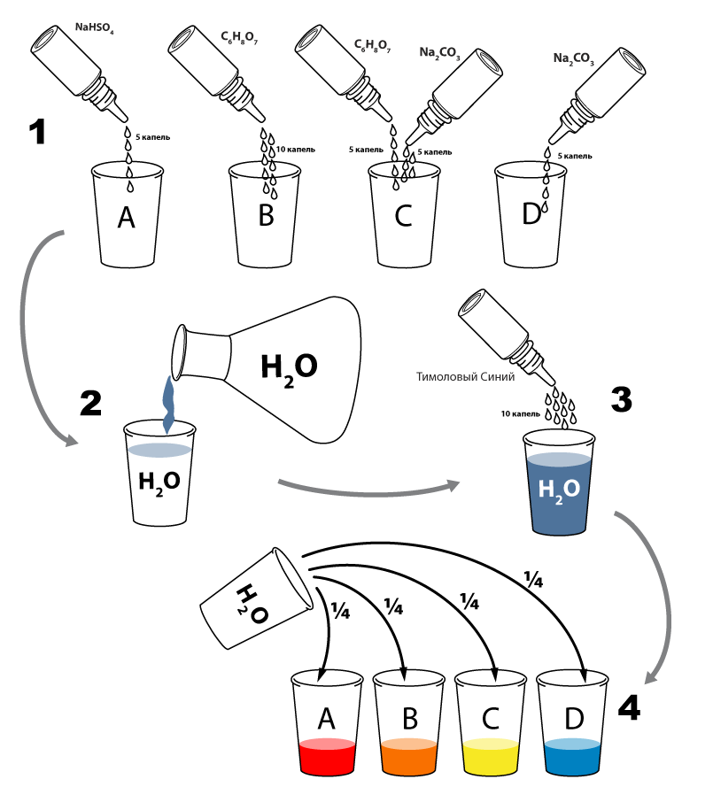
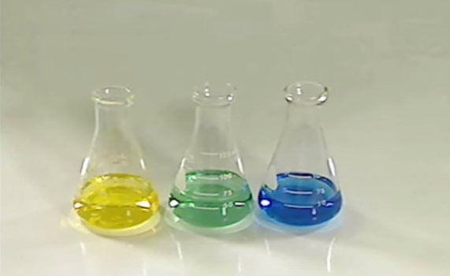
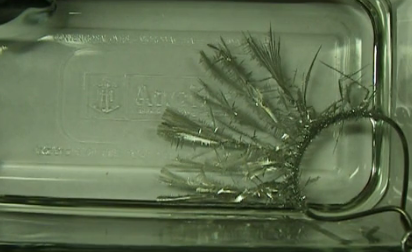

Одна и та же удивительная жидкость становится красной, оранжевой, зеленой и синей, когда ее наливают в разные стаканы
Сложность: 1 из 3
Опасность: 1 из 3
Время: 10 мин.
Одевайте защитные очки

Продукты этой реакции безопасно слить в раковину или в туалет.
Какой из этих двух опытов вам понравился больше?
| А. Магическая жидкость | Б. Оловянное дерево (3 недели назад) |
|  |  |
В станах были налиты растворы разной кислотности:
Индикатор тимоловый синий меняет цвет в зависимости от кислотности среды. Поэтому в разных стаканах он стал разного цвета.
В чистой воде и далее идет какой-то простой, но умный текст про то, что такое кислотность. Когда концентрации обоих видов ионов в растворе одинаковы, говорят, что раствор имеет нейтральную реакцию. При добавлении к воде кислоты концентрация ионов водорода увеличивается, а концентрация гидроксид-ионов соответственно уменьшается, при добавлении основания — наоборот, повышается содержание гидроксид-ионов, а концентрация ионов водорода падает. Когда [H+] > [OH−] говорят, что раствор является кислым, а при [OH−] > [H+] — щелочным.
Для удобства представления, чтобы избавиться от отрицательного показателя степени, вместо концентраций ионов водорода пользуются их десятичным логарифмом, взятым с обратным знаком, который собственно и является водородным показателем — pH.
В чистой воде и далее идет какой-то простой, но умный текст про то, что такое кислотность. Когда концентрации обоих видов ионов в растворе одинаковы, говорят, что раствор имеет нейтральную реакцию. При добавлении к воде кислоты концентрация ионов водорода увеличивается, а концентрация гидроксид-ионов соответственно уменьшается, при добавлении основания — наоборот, повышается содержание гидроксид-ионов, а концентрация ионов водорода падает. Когда [H+] > [OH−] говорят, что раствор является кислым, а при [OH−] > [H+] — щелочным.
Для удобства представления, чтобы избавиться от отрицательного показателя степени, вместо концентраций ионов водорода пользуются их десятичным логарифмом, взятым с обратным знаком, который собственно и является водородным показателем — pH.
Разные вещества могут иметь различные цвета. Однако, индикатор – это одно вещество, которое может иметь различные цвета в разных условиях. Как это происходит? Химическая структура индикатора должна меняться в зависимости от кислотности раствора. Вслед за структурой меняется и цвет. Следовательно, индикатор – это кислота или основание, которое имеет различный цвет в кислом и щелочном растворах.
Разные вещества могут иметь различные цвета. Однако, индикатор – это одно вещество, которое может иметь различные цвета в разных условиях. Как это происходит? Химическая структура индикатора должна меняться в зависимости от кислотности раствора. Вслед за структурой меняется и цвет. Следовательно, индикатор – это кислота или основание, которое имеет различный цвет в кислом и щелочном растворах.
Концентрации химических веществ часто измеряются в очень маленьких величинах, таких как 0.0000001 моль на литр. Было бы неудобно использовать такие числа, поэтому химики изобрели pH. pH – логарифмическая шкала, это означает: когда концентрация уменьшается в 10 раз pH возрастает на 1.
| Концентрация кислоты (H+ , моль на литр) |
pH |
| 1 | 0 |
| 0.1 | 1 |
| 0.01 | 2 |
| 0.0000001 | 7 |
| 0.0000000000001 | 13 |
Диапазон видимого света - это ровно тот диапазон, в котором прозрачна вода. Так как наш глаз заполнен водой, то он не пропускает свет в других диапазонах. Глаза насекомых устроены по другому. У них нет стекловидное тело, содержащего много воды. Поэтому многие насекомые могут видеть и в ультрафиолетовом диапазоне.
Снимите видео эксперимента. Выложите видео вашего опыта в YouTue.
Подберите такую кислотность среды, смешивая растворы лимонной кислоты и карбоната натрия, чтобы индикатор тимоловый синий в этой среде стал зеленого цвета. Выложите видео вашего опыта в YouTue.
Будте готовы, некоторые вопросы со звездочкой непростые. Вы можете пользоваться поиском в интернете, чтобы найти ответы на эти вопросы. Не бойтесь поставить небольшой эксперимент, иногда так проще найти ответ.
Тут пока нет приличного ответа, да и сам вопрос пока от балды. Но тут будет какой-то разумный вопросы с ответом.
Тут пока нет приличного ответа, да и сам вопрос пока от балды. Но тут будет какой-то разумный вопросы с ответом.